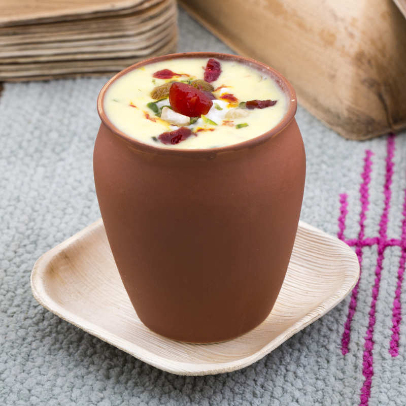

Lassi Recipe

Refreshing Drink
Lassi is a regional name for buttermilk, the traditional dahi
(yogurt)-based drink in the Indian subcontinent.
Lassi is a blend of yogurt, water, spices and sometimes fruit. Salty lassi
is similar to doogh, while modern sweet lassi is like milkshakes.
Ingredients
- 2 cups Plain Curd (yogurt/dahi) (500 ml)
- 3 tablespoons Sugar
- 1/4 teaspoon Cardamom Powder
- 1/2 cup Water or Milk
- 1 tablespoon chopped Mixed nuts, for garnishing, optional
Steps:
-
Take 2 cups curd (plain yogurt/dahi) in a deep vessel or a pot. We have
used the homemade curd in this recipe.
- Add 3 tablespoons sugar and 1/4 teaspoon cardamom powder.
-
Whisk it using a hand beater or a wired whisk or a mathani or a hand
blender until smooth.
- Add 1/2 cup water or milk.
-
Whisk again for 1-2 minutes or until a nice frothy layer on top and
sugar dissolves completely. Sweet Lassi is ready for serving. Pour into
two individual serving glasses and garnish with chopped mixed nuts.